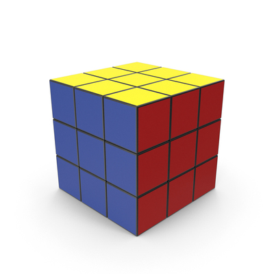
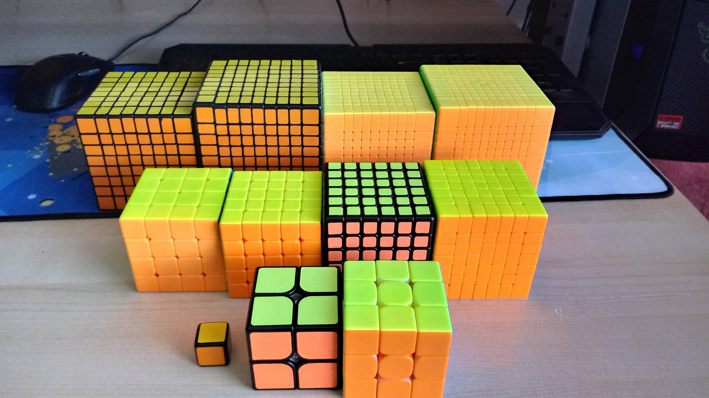
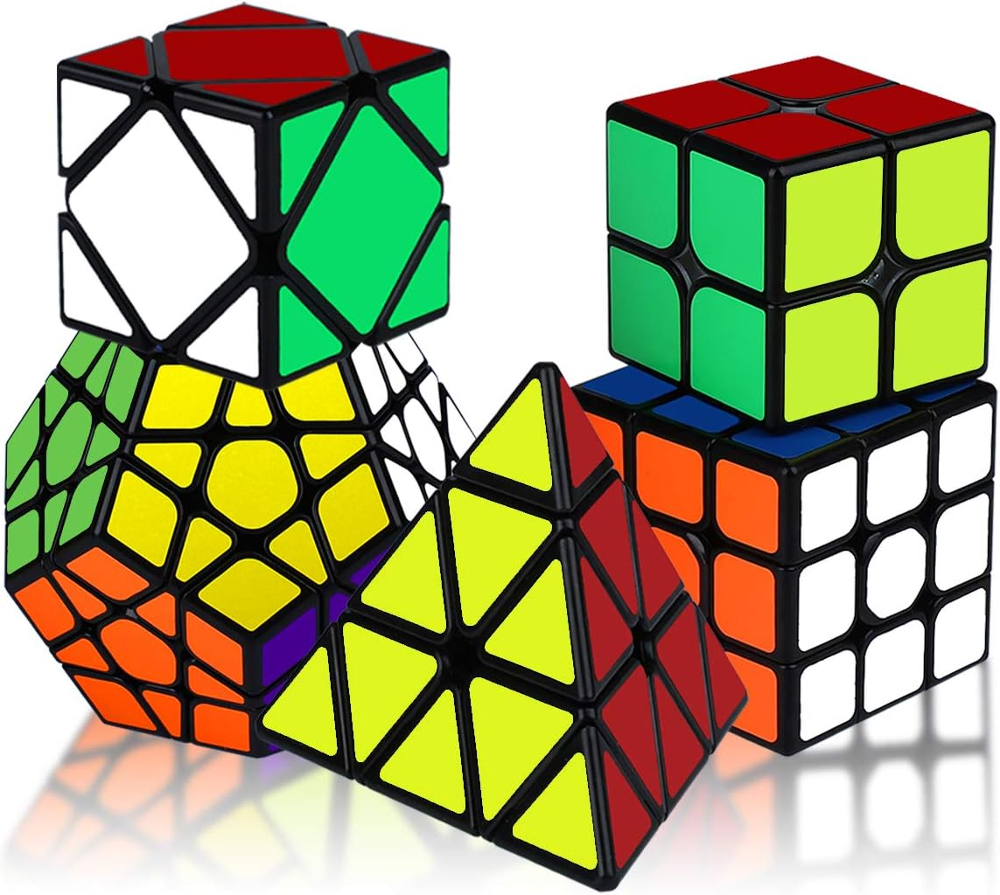

(why rubiks cubes becouse everybody knows what commputer games are)
In the mid-1970s, Ernő Rubik worked at the Department of Interior Design at the Academy of Applied Arts and Crafts in Budapest.[19] Although it is widely reported that the Cube was built as a teaching tool to help his students understand 3D objects, his actual purpose was solving the structural problem of moving the parts independently without the entire mechanism falling apart.
if you want more information about rubiks cube click here:
more infoif you ask me what I like in solving rubiks cubes I will answer I dont know I just like it
there are a lot of rubiks cubes 2x2 two by two 3x3 three by three(the classic) 4x4, 5x5, 6x6 and like this to 11x11
not only that they can be different sizes forms difficulties and more
 I think I turned this into presentation about rubiks cubes